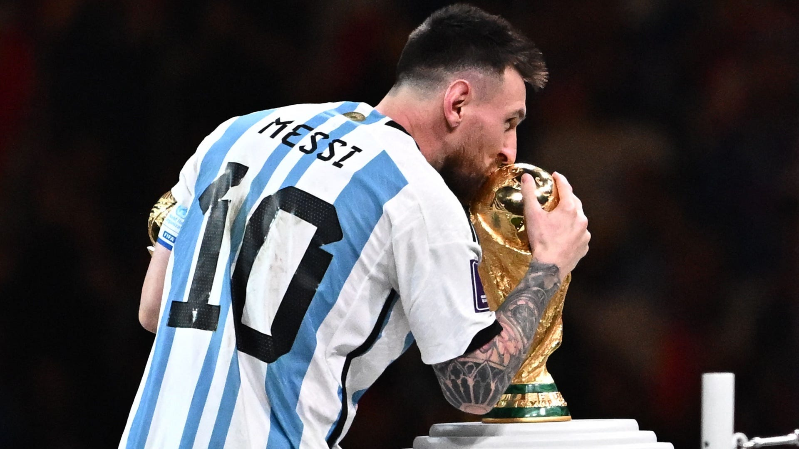

MESSI THE GOAT
Lionel Andrés Messi Cuccittini (Rosario, 24 de junio de 1987), conocido como Leo Messi, es un futbolista argentino que juega como delantero o centrocampista. Jugador histórico del Fútbol Club Barcelona, al que estuvo ligado veinte años, desde 2021 integra el plantel del Paris Saint-Germain de la Ligue 1 de Francia. Es también internacional con la selección de Argentina, equipo del que es capitán. Nacido y criado en la ciudad de Rosario, a los 13 años se radicó en España, donde el Barcelona accedió a pagar el tratamiento de la enfermedad hormonal que le habían diagnosticado de niño. Después de una rápida progresión por la Academia juvenil del Barcelona, hizo su debut oficial con el primer equipo en octubre de 2004, a los diecisiete años. A pesar de ser propenso a lesiones en los inicios de su carrera, ya en 2006 se estableció como jugador fundamental para el club. Su primera campaña ininterrumpida fue la temporada 2008-09, en la que el Barcelona alcanzó el primer triplete del fútbol español. Por su estilo de juego de pequeño driblador zurdo,11 pronto se lo comparó con su compatriota Diego Maradona quien, en 2007, lo declaró su «sucesor».Como internacional argentino, después de debutar en la selección mayor en agosto de 2005, en el Mundial de Alemania 2006 se convirtió en el argentino más joven en jugar y en marcar en un mundial. Al año siguiente, en la Copa América, fue nombrado mejor jugador joven del torneo. Como capitán desde agosto de 2011, llegó con su equipo a las finales del Mundial de Brasil 2014, de la Copa América 2015 y de la Copa América Centenario, además de ganar la Copa América 2021 ante Brasil en el Maracaná y, en 2022, la Finalissima frente a Italia en Wembley y el Mundial de Catar contra Francia en el estadio Lusail.
Datos importantes
Balones de oro
El gran talento que posee ha llevado al astro argentino a ser el futbolista con la mayor cantidad de balones de oro de la historia del fútbol, con un total de 7, consiguiéndolos en los años: 2009, 2010, 2011, 2012, 2015, 2019 y 2021.
Champions League
Messi es sinónimo de Champions League. Por ahora, La Pulga ha conquistado el trofeo en cuatro ocasiones con el Barcelona, siendo un jugador fundamental para su equipo, marcando al menos un gol en dos finales.
Adiós al FC Barcelona
Lionel Messi deja el Barcelona después de 16 años, anunció el club en un comunicado, a raíz de "obstáculos económicos y estructurales" impuestos por la liga española de fútbol para la renovación de su contrato.